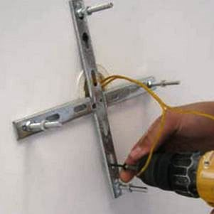
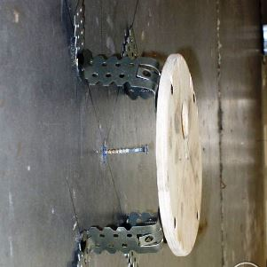

Частный электрик, недорого и качественно.
Телефон - 8 904 642 08 57 Николай.

Установка люстры на потолок.
Цены ниже!
Установка люстр - не слишком тяжёлая работа только для профессионала. Существует свыше 1000 световых приборов разных марок. Уют помещения зависит во многом от освещения. В светлой комнате, как говорится, легче дышится. Важен выбор светильных приборов, их расположение, качество подключения. Освещение комнаты должно соответствовать функциональному назначению помещения. Оно бывает общим, местным, комбинированным. Более ярким, парадным помещение станет благодаря освещению точечным оборудованием, люстрами. Сегодня распространенным, удобным источником света является электрическая лампа. Оформляя световой дизайн помещения, надо учитывать дизайн самих приборов, регулирование светового потока. На люстре могут быть одна, две, три и более электрические лампы. Имеются разные варианты регулирования света. Например, лампы можно сгруппировать и включать их отдельно, используя двухклавишные выключатели. Их установка должна производиться обязательно мастером.
Мастер по установке люстр в СПБ.
Имея большой опыт, я проведу качественную установку люстр и светильников.
Я учитываю важные нюансы: надежное крепление кронштейна, правильное подсоединение токоведущих проводов. Особой точности, профессионализма требует работа на натяжном потолке. Я профессионально сделаю демонтаж старых приборов, замену их новыми светильниками, монтаж любых приборов, электрооборудования, соблюдая требования техники безопасности. На свои работы я предоставляю гарантии. При надобности помогу в осуществлении закупки и доставки оборудования, материалов. Я провожу установку приборов различных фирм-производителей в срок.
Гарантирую качество следующих работ:
- Демонтаж приборов;
- Замену светильников;
- Установку люстр(точечных, потолочных, галогеновых);
- Установку приборов в гипсокартон.
Сколько стоит установить люстру.
Количество люстр в штуках. |
1 |
2 |
3 |
4 |
Цена за установки 1 люстры. |
От 1200 руб. |
1000 |
900 |
800 |
|  |  |
При подготовительных работах первоначально намечается место установки светильника. После пробиваются отверстия: гнезда для крепежных деталей, сквозные проходы. При сплошном потолке пробивается сквозное отверстие, там помещается крюк, закрепляемый сверху гайкой. В полом перекрытии крюк укрепляется в полости панели проволочной защелкой, отверстие заделывается цементом.
Такое подключение в центре потолка плохо освещает периферийные зоны комнаты. Лучше, если световой поток будет направляться и вниз, и вверх. Лучи света отражаются от потолка, рассеиваются по комнате, мягко освещают все зоны.
Кто сможет установить люстру?
Установить люстру не так просто, как кажется и человек, который совершенно не имел опыта в этом деле, вряд ли справиться с такой работой. Но помимо опыта понадобятся познания в сфере электрификации и умения правильно настраивать осветительные приборы. Чтобы произвести установку люстры легче пригласить квалифицированного мастера, который быстро и качественно выполнит работу.
Во-первых, мастер имеет нужные инструменты, а обычному домохозяину запас арматуры не нужен. Согласитесь, что специфические плоскогубцы, отвертка-индикатор, специальная отвертка с тонким жалом и монтажная колодка не всякому нужны в быту, и приобретать весь этот набор ради монтажа одной люстры будет не выгодно.
Во-вторых, уровень знания в сфере электрификации. Вы знаете, как правильно соединять провода, и каким правилам нужно следовать при монтаже люстр? Как нужно определять «ноль» и «фазу»? Если не имеете понятие, о чем идет речь, то лучше просто не рисковать и доверить установку люстры специалисту в этой области.
В-третьих, установка люстр должна производиться только, если электричество в доме отключено. А для проверки отсутствия напряжения в сети необходимо использовать отвертку-индикатор, которая есть у любого мастера. Особое внимание следует уделить процессу креплению люстры, это самый щепетильный момент, в который может понадобиться дополнительная помощь.
Одним из самых опасных этапов монтажа является проверка проводов.
Учтите, что установка люстр запрещена во влажных помещениях, в нестойких конструкциях и в местах повышенной огнеопасности.
В обязательном порядке выключите автоматический выключатель на счетчике. Затем на потолке, там, где должна висеть люстра, необходимо отыскать три провода: два провода «фазы», один – «нуль». «Нуль» направляют в монтажную коробку, а два других провода направляют на выключатель.
Как определить где ноль, а где земля для люстры.
Чтобы определить где нуль и где фаза, нужно включить свет в комнате и подвести отвертку-индикатор к каждому из проводов. Если индикатор отвертки при контакте с проводом не загорелся, то значит это «нуль», а если замигал, то, значит, «фаза». Различив провода, их обычно помечают изолентой. Недавно введены новые правила, которые касаются установки проводов. Исходя из них, фаза имеют коричневый или черный цвет, а нулевые синею окраску. Провода люстры должны быть маркированы. Если отметин нет, то электрик определяет свойства проводов, которые выведены на клеммную коробку. Через эту коробку, будет поступать электричество. В розетку включают два провода люстры, а третий не трогают. Как лампы загораются, отмечаются провода, которые подключались. Далее один провод меняют местами с другим, неподключенным ранее. Если вторая часть ламп загорелась, то все сделано правильно.
Снимается изоляция, а потом их разводят в разные стороны. Для полной надежности еще раз проверяется напряжение, включив свет в помещение, где производится монтаж люстры.
После подготовительных этапов электрик устанавливает люстру. Её аккуратно приподнимают и вешают на крюк. Соответственно свойству провода, каждый из них соединяется со своей парой на потолке. Затем мастер проверяет крюк на прочность и заматывает его двумя-тремя слоями изоленты, чтобы изолировать от воздействия внешних факторов. Специалист следует определенным инструкциям и правилам, если в инструкции указано, что необходимо заземление, то оно обязательно должно быть подключено.
Любой электрик знает, что соединять кабели из разного металла опасно, например алюминиевый кабель и медный, соединившись, образуют электронную пару, которая разрушает контакт. Обычно используют специальную колодку, он прикручивается винтами через втулку.
Некоторым людям не нравится, что сначала зажигается основное освещение, а потом малое. В таком случае можете попросить электрика поменять местами фазные концы на люстре и выключатели. Делается это за пару минут.
Перед монтажом декоративного колпака люстры, необходимо протестировать качество работы мастера. Если вы не видите никаких искр и освещение настроено корректно, то можно смело завинчивать колпак – все сделано правильно.
Ремонт люстры после установки.
Отдельной темой является ремонт неисправной люстры, торшеров и бра и других приборов освещения. Бывает так, что любимая люстра выходит из строя и выбрасывать её не хочется. В этом случае её легко можно починить, к тому же практически любой осветительный прибор легко восстанавливается, если заменить нужные детали. Все, что нужно в этом случае это позвонить специалисту и провести детальную диагностику осветительного прибора. Если неисправность несущественна, то мастер исправит неполадки на месте, а при более серьезных повреждениях, возможно, нужен долгосрочный ремонт.
Я рекомендую выбирать люстры с поворотными лампами.
Установка люстр этого образца удобна в спальне, комнате отдыха.
Монтирую приборы также в ограждении лестницы. Они эффектно подчеркивают интересные детали интерьера. Выделить оригинальные зоны помещения можно подключением точечных осветителей. Поворотные модели позволяют перенаправлять световой поток. Это удобно при частой смене обстановки.
Работая, я тщательно защищаю проводку от механических повреждений.
Иногда использую кабель-каналы. В них можно уложить также антенный, телефонный кабель. Устанавливая многоламповые люстры, провожу разделение проводки для легкой смены режима освещенности.
 Поменять проводку в квартире.
Поменять проводку в квартире. Сколько будут стоить материалы.
Карта сайта.
Замена электропроводки в панельном доме.
Расценки на электропроводку квартир.
Замена проводки в хрущевке.
Электромонтаж в частном доме.
Электрика в загородном доме.
Сколько стоит замена электропроводки в двухкомнатной квартире?.
Сколько стоит проложить проводку в 3 ком квартире?
Сколько стоит сделать внутреннюю проводку?.
Стоимость штробление стен.
Электромонтаж в бане.